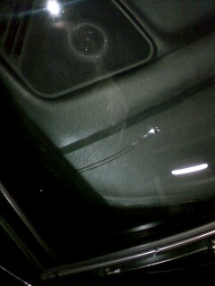
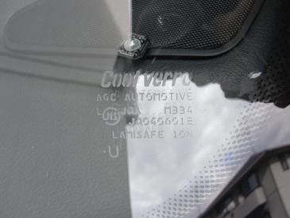
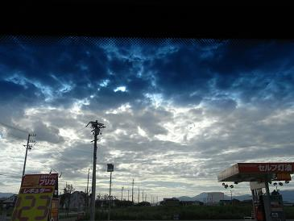

 ある日、ヒビが入ってしまったフロントガラス ガラスにヒビが入ったことを某SNSに書き込むと、 関東のMASA坊さんから「クールベールにしてみては？」とアドバイスをいただいた＾＾ しばらくヒビが入ったまま乗っていたが、最終的にはこの倍くらいにまでヒビ割れが大きくなった。
|
  クールベールはE34辺りの年代になると、受注生産になる。 発注して１週間もあれば作ってもらえる。 最近のBMWに装着されているクライメートガラスのように、ナビやレーダーの電波を遮断することもないので、 電子機器の使用で困ることは何も無い。ガラスの歪みなど品質に関してもバッチリだ＾＾ ガラス上部のシェードは純正のガラスよりも濃くなっている。 肝心の断熱性能は・・・ 無いよりはマシかな？くらいで感動できるほどの物ではない。 フィルムを貼ったほうが効果は大きいように感じる。 紫外線を防いでくれるようなので、これ以上内装の劣化を防いでくれることに期待しよう。
|